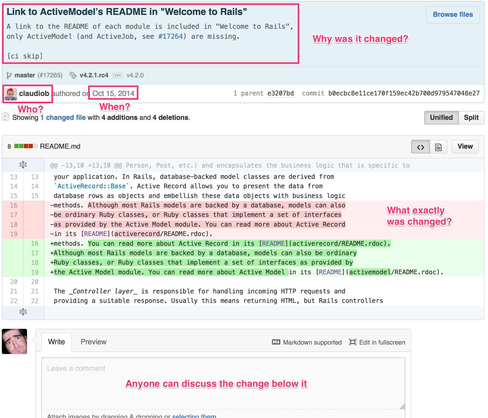

A More Representative Democracy
Technology has given our representatives the power to manipulate rather than represent, but here I imagine a system that returns the power of law-making to the people.
Introduction
Representative democracy hasn't changed much since the 1700's, but our lives have changed drastically:
- The US population grew from 4 million to over 320 million
- Regions contain countless ethnic, moral, and cultural groups
- Real-time global communication and commerce became possible
These changes made it easier for representatives to ignore or manipulate people rather than truly represent them. However, these same changes also offer a solution to the issues they've created.
The Issues
Low Voter Turnout
Only about 60% of the eligible population votes during presidential election years, and about 40% votes during midterm elections, meaning an elected official isn't chosen by majority.
I haven't voted since 2004 and others tell me that means I have "no right to complain", but I disagree. There is no one worth voting for: the system has failed me.
Instead of guilting, threatening, or blaming the non-voting majority for not working within the system, we should adjust the system to include them.
Gerrymandering
Electoral districts are drawn and re-drawn to ensure every representative represents the same amount of people, but every change is subject to gerrymandering: drawing the lines in your favor. The easiest way to mitigate your opposition is to make them minorities in districts that support you.
Corporate Interests
Elections reduce thousands or millions of people into one winner who reigns for multiple years: the stakes are too high.
High stakes drive campaigns into routine costs of millions of dollars. Costs corporations gladly subsidize in return for political clout during the winner's rule. The current push to reform campaign finances will not work as long as the election cycle encourages a systematic, repeatable approach.
Donations, friendships, future jobs, under-the-table arrangements: people with money will continue to find ways to receive favors from the people with power.
Fast-changing Cultures
Policy-makers take decades to adjust to majority changes:
- Blue Laws are remnants of a more religious leadership.
- Marijuana is slowly evolving an equal status to alcohol and tobacco.
- Telsa Motors and breweries are fighting laws preventing them from selling directly to customers.
- Uber is unseating taxi laws and lobbies across the world
- Gay Marriage is legal in more than half US states
These changes could be seen as the system working, but why does it take so much time, money, and influence to challenge entrenched minorities?
Once enacted, laws become incredibly difficult and expensive to undo because elected officials avoid controversial topics or those conflicting with their powerful supporters.
The Solution
Even with these issues, representative democracy is still the best we've got, but how can we make it better?
The Internet has revolutionized how people organize and coordinate, yet in politics we merely use it to communicate with our elected officials. Instead let's use the Internet to create a representative democracy without elections.
OurGovernment.org
Each citizen receives an account to this theoretical website giving them all equal access to the law-making process:
Not every community is ready for Internet-required policy-making but many are: high-tech towns and cities, home-owner associations, corporate governing boards, and white-collar unions.
Assigning Your Representative
Assigning a representative is not required. The Internet makes every citizen voting on every decision possible, but it remains impractical: people are busy and under-informed. This representative democracy is based on six simple rules:
- Every citizen receives one vote per decision
- You may cast that vote yourself or lend it to another citizen
- You may also lend your vote for all future decisions to another
- This other citizen can lend their vote and yours to another and so on
- Lended votes may be revoked at any time
- Votes must be cast by the deadline
Real-time lending and revoking votes creates a fluid pyramid of power which is:
- Constantly adjusting the will of the people
- Harder to buy or control
- Easier for non-voters to remain counted
- More encouraging of grass-root movements
Proposing a Law
- Any citizen can propose a law
- Any citizen can discuss or propose changes to it
- Everyone is held accountable for their involvement
Who wrote the 33,000 pages of the Affordable Healthcare Acts? How was the Patriot Acts' 342 pages written, proposed, and passed between September 11 and October 26, 2001? Who added/removed that? When did they do it? What was it before?
All important questions when reviewing a bill or law. The same questions software-makers have been answering for decades with version control systems.
Github is leading the latest movement in version control: social collaboration, review, and management. For example, here is a popular software package's introductory file and here is:
- it's current version
- it's complete edit history
- who last changed each line
- most active editors
- a specific change by a specific person (shown below)

Making the law-writing process more transparent encourages more people to be involved (and heard) while forcing contributors to build and maintain trust within the community. This trust is harder for outside interests to buy.
Voting
Bills become laws when they are approved by community vote. Citizens cast their votes and those lended to them on the community website. Vote lenders can see how their vote was cast and optionally revoke it. The community's constitution or operating agreement lays out the details such as:
- When does a bill become available to vote?
- How long is a vote open?
- What is the maximum number of votes a single person can hold?
- Can lended votes be revoked after the voting deadline?
- Are names of vote lenders given to lendee?
- What percent is required for a vote to pass?
Reviewing laws and spending
Once a bill is passed it becomes law, yet it retains a complete audit history of every word. Anyone can propose a change to the wording, but like bills the change must pass via vote.
In addition to laws, the website openly tracks the community's money. Every citizen sees past, present, future income and expenses. In the age of electronic payments and spending forecasts, there is no excuse for unaccounted-for money or surprise deficits.
Other branches of government determine how laws are interpreted and executed which is outside the scope of the website, but with this system making laws, budgeting money, and declaring war are closer to the people than the founding fathers of the United States could have ever imagined.
The community laws and votes balance privacy and confidentiality with transparency and accountability.
Wrap-up
Again, this website is only theoretical, and I don't expect any such website to exist at a national level anytime soon. There's a reason the United States was at the forefront of democracy in the 1700's: adopting new ideas is easier when starting from scratch. Changing existing systems is more gradual, start small and slowly gain acceptance into larger and larger groups.
The growing number of referendums is an encouraging sign that democracy is moving towards the individual, but they remain limited to social issues like marriage and marijuana. The meat of power and policy remains in the hands of the connected and privileged. A more transparent legislative system that is harder to manipulate and control would result in a more representative democracy.
Elections aren't longer necessary for representative democracy.